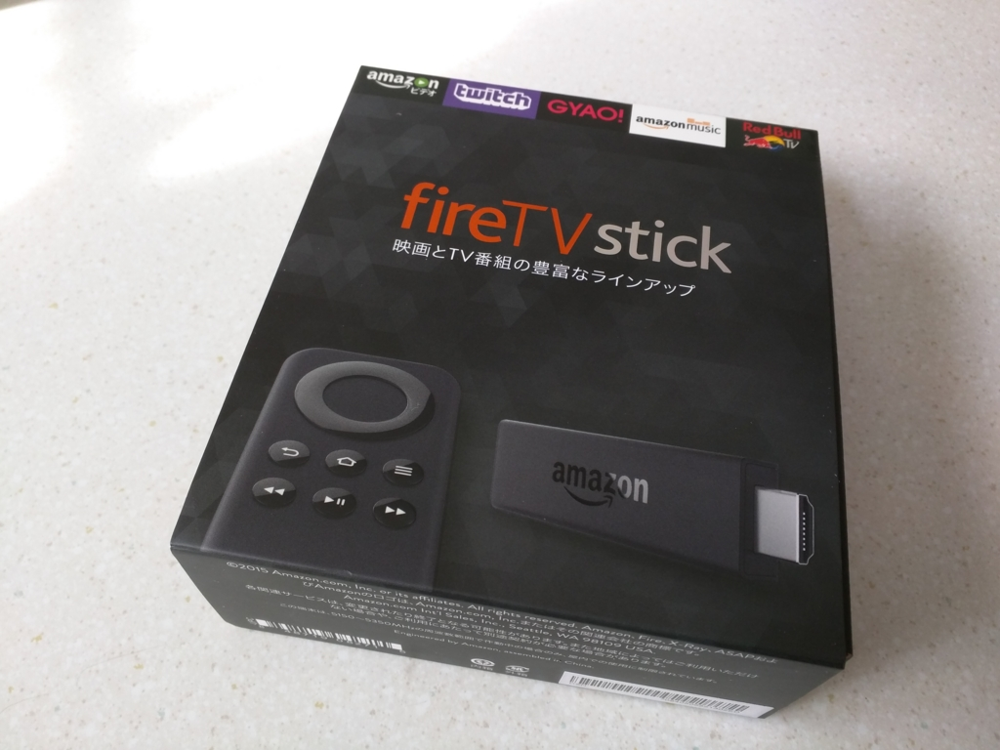
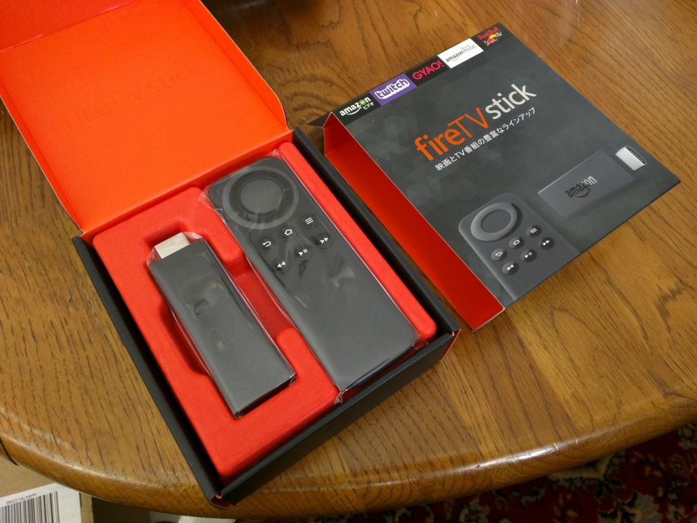
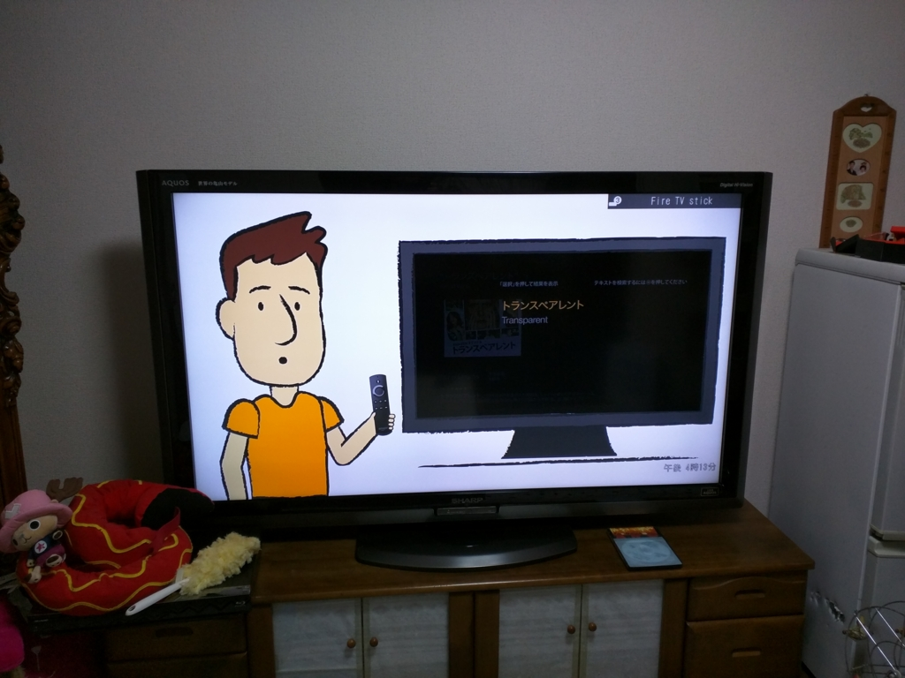

実家に「Fire TV Stick」をプレゼントしたらわりと喜ばれた件について
公開日：

おかんの誕生日プレゼント代わりに「Fire TV Stick」を買ってあげた。ぶっちゃけ、自分がちょっと触ってみたかったというのが本当のところだけど、これがなかなか好評。買ってよかった。

「Fire TV Stick」っていうのは要するに、
- Android 搭載のスティック型パソコン（？）
- TV の HDMI 端子にさして USB ケーブルで給電してやるだけで動作
- Wi-Fi につないであげると、Amazon プライムビデオ（プライム会員になる必要がある）を TV で観られる
- スマホみたいにアプリがある。YouTube とか Hulu、ニコ動なんかのアプリを追加インストールしてやると、そっちの動画もみられる
みたいな感じ。Miracast（Microsoft Wireless Display Adapter を衝動買いしてみた - だるろぐ）に似てるけど、それをネット動画に特化した感じかな？

付属品は本体、給電用のアダプターと USB ケーブル、リモコン、リモコンの電池。機械的なセットアップは簡単だと思う。万が一スティック本体が干渉した時のための HDMI ケーブルもついていた記憶があるが、実家の TV では使わなかった。

面倒だったのはリモコンでの Wi-Fi の設定。パスワードをプチプチ打つのが超めんどかったけれど、それさえ済ましてしまえば快適。チュートリアルもついてて、うちのおかんでもすぐに操作できるようになった。しかもとても気に入ったようで、僕が実家に滞在している間だけでも5、6本は一緒に映画を観た。たまにはそういうのもいい。
ただ、やっぱり文字を打つのは苦手で、音声入力付きのリモコンを買ってあげてもよかったなと思う。どこまで使えるのかわからんが……。
")
- 出版社/メーカー: Amazon
- 発売日: 2015/10/28
- メディア: エレクトロニクス
- この商品を含むブログ (37件) を見る